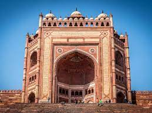

Fatehpur Sikri (Hindi: [ˈfətɛɦpʊɾ ˈsiːkɾiː]) is a town in the Agra District of Uttar Pradesh, India.
Situated 35.7 kilometres from the district headquarters of Agra,[3] Fatehpur Sikri itself was founded as the
capital of Mughal Empire in 1571 by Emperor Akbar, serving this role from 1571 to 1585, when Akbar abandoned
it due to a campaign in Punjab and was later completely abandoned in 1610.
The name of the city is derived from the village called Sikri which occupied the spot before. An Archaeological
Survey of India (ASI) excavation from 1999 to 2000 indicated that there was a habitation, temples and commercial
centres here before Akbar built his capital. The region was settled by Sungas following their expansion. It was
controlled by Sikarwar Rajputs from the 7th to 16th century CE until the Battle of Khanwa (1527).
The khanqah of Sheikh Salim Chishti existed earlier at this place. Akbar's son Jahangir was born in the village
of Sikri to his favourite wife Mariam-uz-Zamani in 1569 and in that year Akbar began construction of a
religious compound to commemorate the Sheikh who had predicted the birth. After Jahangir's second birthday, he
began the construction of a walled city and imperial palace here. The city came to be known as Fatehpur Sikri,
the "City of Victory", after Akbar's victorious Gujarat campaign in 1573.
After occupying Agra in 1803, the East India Company established an administrative centre here and it remained
so until 1850. In 1815, the Marquess of Hastings ordered the repair of monuments at Sikri.
Fatehpur Sikri was awarded the status of UNESCO World Heritage Site in 1986.